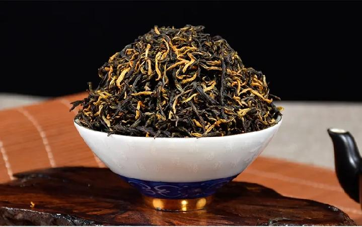
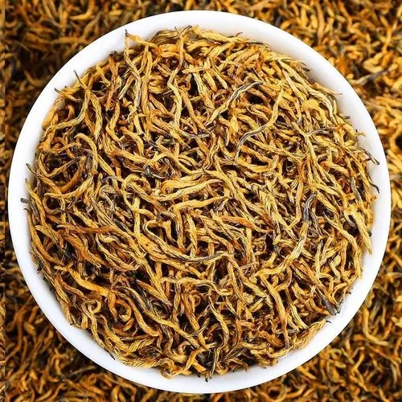

金骏眉
金骏眉是于清明前采摘于武夷山国家级自然保护区内海拔1500-1800米高山的原生态小种野茶的茶芽，采集芽尖部分，由熟练的采茶女工手工采摘，每天一女工只能采芽尖约2千粒，结合正山小种传统工艺，由师傅全程手工制作，每500克金骏眉需数万颗芽尖。

金骏眉外型细小而紧秀，颜色为金、黄、黑相间，细看，金黄色的为茶的绒毛、嫩芽，开汤汤色为金黄色，啜一口入喉，甘甜感顿生。其水、香、味似果、蜜、花、薯等综合香型，滋味鲜活甘爽，喉韵悠长，沁人心脾，仿佛使人置身于原始森林之中。连泡12次，口感仍然饱满甘甜，叶底舒展后，芽尖鲜活，秀挺亮丽。总之，金骏眉实属可遇不可求之茶中珍品。
与传统正山小种产品相比，金骏眉的最大特点是，外形细长如眉，间杂金色毫尖；香气幽雅多变，既有传统的果香，又有明显的花香；茶汤色泽较淡，金黄透亮；滋味甘清圆润，特别耐泡，用功夫茶泡法，110CC盖杯，只需4-5克干茶即可，十泡犹有韵味。不过，这种产品无论对原料和制造工艺的要求都非常高。必须选择生长于千米以上高山，竹林边缘处那一圈的老茶树春季单芽。据统计每公斤大约9-18万个芽尖，而且必须是谷雨前后一周内萌发的芽头。采摘时，要等太阳出来后，茶芽上露水全干之后。除此，制作时还必须非常小心，全过程手工操作。即使这样，制优率也只有70%。可谓是一分功夫一分品质，丝毫马虎不得。

与传统的正山小种最大的不同之处在于：传统的正山小种要经过松枝烟熏，而骏眉除了在萎凋过程中有小部分的烟熏之外，并没经过用松枝烟熏的过程。骏眉的制作对茶青和工艺要求极高，产量有限，故金贵。